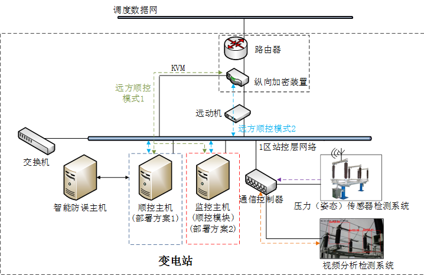
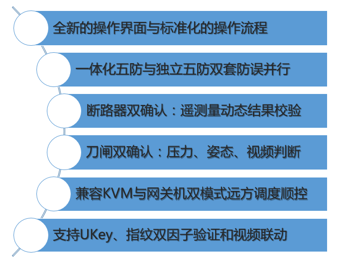
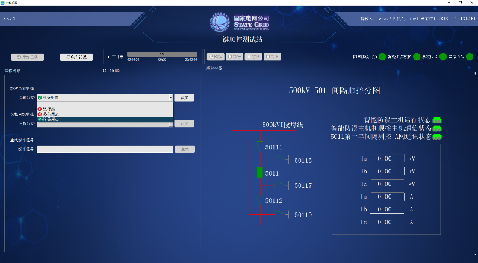
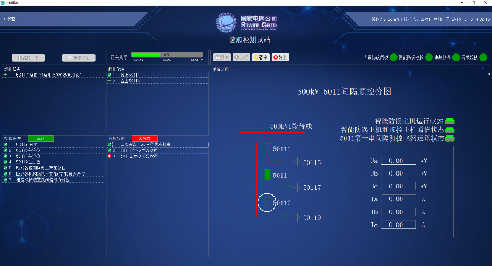

一键顺控是国网公司提出的一种新型变电站倒闸操作模式，实现设备操作状态自动判别、防误联锁智能校核、操作步骤一键完成。四方公司产品顺控主机和智能防误主机顺利通过国网公司一键顺控首批送检。国网公司计划在未来5年对110kV及以上的变电站一键顺控建设与改造，市场前景广阔。
四方公司一键顺控产品全面，技术领先。可提供一键顺控系统、智能防误系统、主设备全面监视系统、辅助设备全面监控系统和双确认校核系统等全系列产品和技术方案，产品线齐全。

“高压隔离开关状态监测系统”主要由CSN-49D姿态传感器和CSC-171H开关状态监测单元组成，是实现“隔离开关分合闸状态双确认”的核心系统，是实现变电站“一键顺控操作”的关键组成部分。已通过国网统一入网检测，成为首批检测通过的唯一的二次设备厂家。该系统适用于各种形式的高压隔离开关，并率先在国网首个姿态传感器“双确认”试点工程（浙江天湖220kV变电站）中投运。



四方股份为您提供优质的解决方案
如有任何问题，请与我们联系
邮箱：fankun@sf-auto.com
电话：010 - 62961515 - 1282